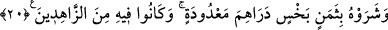

gizlediler.
“Allah onların yaptıklarını çok iyi bilendir.” Sırları O’na gizli değildi.
20. (Kafile Mısır’a vardığında) onu değersiz bir pahaya, birkaç dirheme sattılar.
Onlar zaten ona değer vermemişlerdi.
Kafile Mısır’a vardığında Mâlik ve arkadaşları “onu değersiz bir pahaya” ayarı
düşük akçeye... Kâşifî’nin belirttiğine göre ‘düşük ve itibarsız bir fiyata’ sattılar.
Paranın ‘değersiz’ olarak tavsif edilmesi, ya sahte ve değersiz olmasından ya da
ağırlığının eksik olmasından ileri gelmiştir. Şeyhzâde’nin Hâşiye’sinde böyle
geçmektedir.
Bazıları ise “değersiz bir pahaya” ifadesini haram ve eksik para olarak tefsir
etmiştir. Çünkü hür bir insan satılarak kazanılan para haramdır. Buna göre haram
paranın bereketi kaldırıldığı için değeri düşük olmuş oluyor. Ancak birinci görüş daha
doğrudur.
“birkaç dirheme” yani tartılı olmayan bir kaç tane dirheme “sattılar.” Bu ifade,
alınan paranın aslında eksik olduğunu beyân ettikten sonra miktar olarak da az olduğunu
açıklıyor. Çünkü bu insanlar, kırk dirhem değerindeki ukıye’yi tartarlar, daha aşağı
değerdekileri ise sayarlardı. İbn Abbas’tan bu paranın yirmi dirhem olduğu rivâyet
edilmiştir. Süddî’den bunun yirmi iki dirhem olduğu da rivâyet edilmiştir.
Fakir (Bursevî) -Kudret sahibi Allah kendisini te’yid etsin- der ki: Bunlar Yûsuf’u
bir alış veriş malzemesi yaparak değerini takdir etmediler. Çünkü onun kim olduğunu
bilmiyorlardı. Ya Allah Teâlâ takdir edilen şeyin meydana gelmesi için onlara Yûsuf’un
kim olduğunu sormayı unutturdu ya da durumunu sordukları halde dili İbrânîce
olduğundan bir şey anlamadılar. Bu konu ile ilgili iltifat edilmemesi gereken oldukça
zayıf rivâyetler vardır. Gerçi müfessirlerden büyük bir çoğunluk bunları benimsemiştir.
Ebüssuûd Efendi’nin İrşâd’ında takındığı tavır ise şâyân-ı takdirdir.
Anlatılır ki Hz Peygamber (s.a.) mescide giderken çocuklar çevresini kuşatarak
“Hasan’la Hüseyin’e ikrâm ettiğin gibi bize de et. Sizi esir aldık.” deyince Peygamber
Efendimiz Bilâl’e: “Eve git de kendimi bunların elinden satın alabilmem için ne
bulabilirsen getir.” buyurdu. Bilâl de gidip sekiz tane ceviz getirdi. Hz. Peygamber
bunların karşılığında kendisini kurtardı (satın aldı) ve şöyle buyurmuşdu: “Kardeşim
Yûsuf ’u az bir pahaya birkaç paraya sattılar, beni ise sekiz cevize sattılar.”
Ravzatü’l-ahbâr’da böyle geçmektedir.
“Onlar” yani satıcılar “zâten ona” Yûsuf’a “değer vermemişlerdi.” Zühd ve
zâhidlik, bir şeye rağbet etmemek demektir. Yani onlar ellerinde bulunan şeylere fazla
rağbet etmeyen kimselerdi. Bu sebeple de Yûsuf’u zikredilen az pahaya sattılar. Bunun